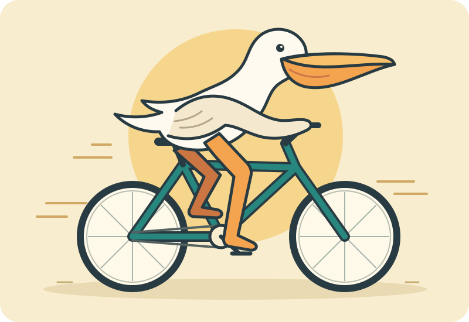

正在做的事
一些实践，也是一点点积累。
Prompt把问题说清楚
关注怎样表达任务、补充上下文、定义输出，让一次提问更接近真正想解决的问题。
RAG让回答有依据
关注外部知识如何被检索和使用，以及资料质量、来源呈现与回答可信度之间的关系。
Agent从回答走向行动
关注 AI 如何围绕目标使用工具、推进任务，也关心用户在什么时候需要参与和确认。
这是我正在关注的学习主题，欢迎一起交流。
你好，我是 Jerry。
保持好奇，也保持动手。
我在学习 AI 产品，也喜欢试用工具、拆解问题，把想法做成看得见的东西。这个网站是一个持续生长的个人空间，收集实践、学习和偶尔的灵感。
如果你也对 AI 产品和有趣的实验感兴趣，可以在 GitHub 找到我。
在 GitHub 见